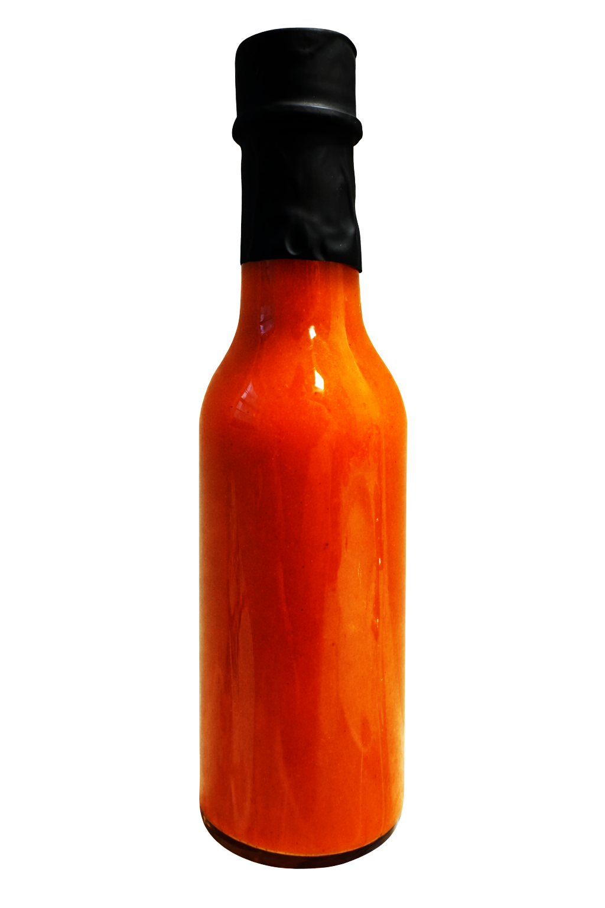

Bayeaux Blaze
A balanced vinegary kick that is rounded out with garlic and a pinch of sugar. Use on chicken or rice-based dishes to bring out a dash of the Bayou.
Final pH: 2.60
Estimated salinity: ~0.3–0.4% w/w NaCl
Estimated heat: ~8,000–12,000 SHU

Ingredients
- 2 serrano peppers, stemmed
- 2 large jalapeño peppers, stemmed
- 4 fresno peppers, stemmed
- 6 cloves garlic, peeled
- 2/3 cup white vinegar
- 1/3 cup apple cider vinegar
- Pinch of salt
- Pinch of sugar
Acidification and stability
This is a non-fermented, acidified hot sauce. Final pH testing for this batch measured 2.60, well below 4.0 and supports microbial stability when bottled under sanitary conditions.
Method
- Combine peppers, garlic, vinegars, salt, and sugar in a saucepan.
- Bring to a gentle simmer and cook for 15 minutes, until peppers and garlic soften.
- Carefully transfer to a blender and blend until fully smooth.
- Strain through a fine mesh sieve to remove solids and produce a pourable texture.
- Cool, then bottle using your safe bottling method.
Technical fact sheet
- Final pH: 2.60
- Estimated salinity: ~0.3–0.4% w/w NaCl Estimate assumes a single pinch of salt relative to total batch volume. Added to increase flavor and not necessary for preservation.
- Estimated heat: ~8,000–12,000 SHU Pepper heat varies by season, maturity, and growing conditions. Serrano contributes most of the capsaicin load. Add or subtract peppers to adjust heat level.
- Texture: Fully strained, low particulate, consistent pour
Like this sauce?
Here are a few classics that inspired this recipe and are worth trying.
Crystal Hot Sauce
Bright, vinegary Louisiana-style heat.
Tabasco
Sharp acidity and aged pepper punch.
Tapatio
Mexican favorite with a spicy and smooth finish.
Mentioned brands are some of our favorites we used for inspiration and are not affiliated with All-Told Hot Sauce.